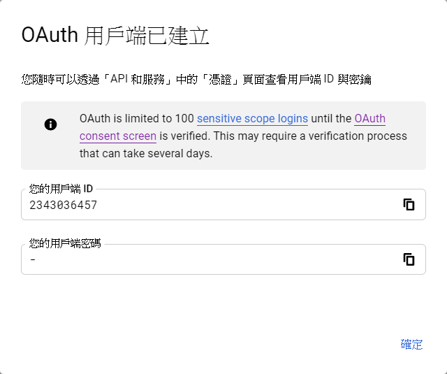
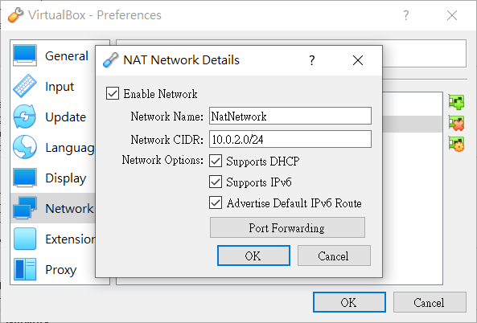
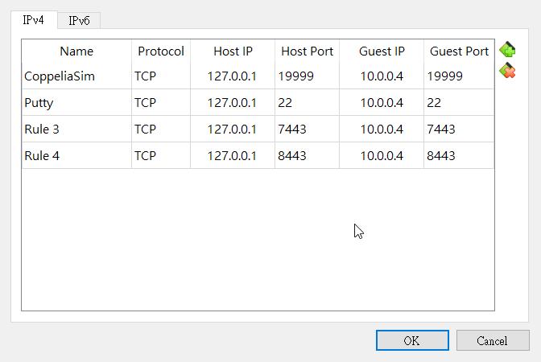
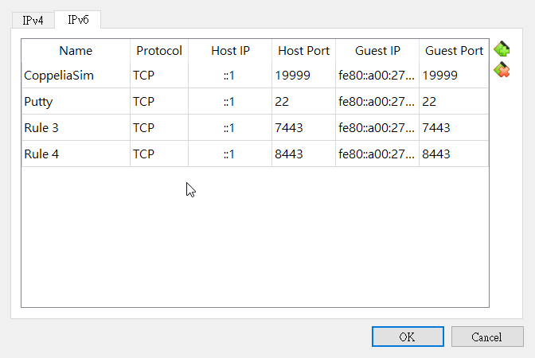

問題 <<
Previous 每周進度
W2
CoppeliaSim User Manual 內容分析
了解製作四輪機器人所需功能
W3
了解製作四輪機器人所需功能(CoppeliaSim User Manual)
著手進行機器人製作
PDF製作(CoppeliaSim User Manual)
W4 & W5
PDF製作(CoppeliaSim User Manual)
Webots 內容分析
DesignCollaborationBetterProducts 內容翻譯
W6
Webots 內容分析
DesignCollaborationBetterProducts 內容翻譯
Assignment 1 總整理
W7
亂數抽選直播
進度回報
W10
Oauth2 client 連線設定

W12
協同管理網站 : http://mde.tw/cdaw12-1/content/index.html
倉儲 : https://github.com/mdecourse/cdaw12-1
W13
協同管理網站 : http://mde.tw/cdaw13-3/content/index.html
倉儲 : https://github.com/mdecourse/cdaw13-3
4輪車模擬問題:
1.尺寸問題(公英制混用)
2.Remote API
車輪與底盤配合(以解決)
VirtualBox網路設定
新增網路設定

設定Port號(IPv4 & IPv6)


IP 查詢使用:
ifconfig
*若遇到Proxy問題
cd /etc/apt/apt.conf.d
sudo vi proxy.conf
#案I鍵進入編輯輸入以下內容:(編輯完成後按ESC>>:wq儲存編輯)
Acquire::http::proxy "http://[2001:288:6004:17::port號]:3128";
更新apt
sudo apt update
*ipv6環境設定
cd /etc/netplan
sudo vi 00-installer-config.yaml
#按I健進入編輯,ESC退出,:wq儲存
# This is the network config written by 'subiquity'
network:
ethernets:
enpes3:
dhcp4: true
dhcp6: true
nameservers:
addresses:
- 2001:b000:168::1
version: 2
sudo netplan apply
W14
IPv6設置
依照老師說明設定IPv6:
2001:288:6004:17:2020:1::7148/64
gateway: 2001:288:6006:17::254
dns:
2001:288:6004:1::2
2001:288:6004:17::2
2001:288:6004:17::3
2001:b000:168::1
"c:\Program Files\Oracle\VirtualBox\VBoxManage.exe" internalcommands sethduuid Ubwcm_w13.vdi
問題 <<
Previous